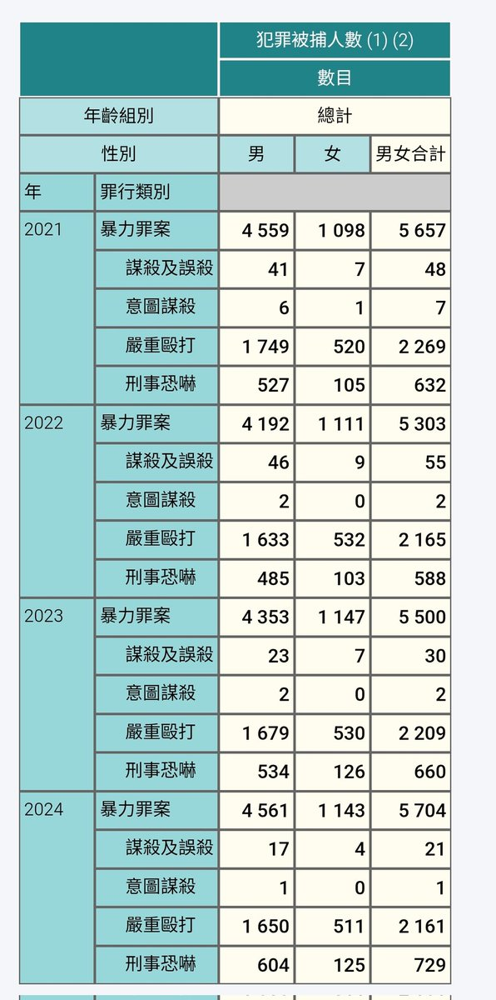
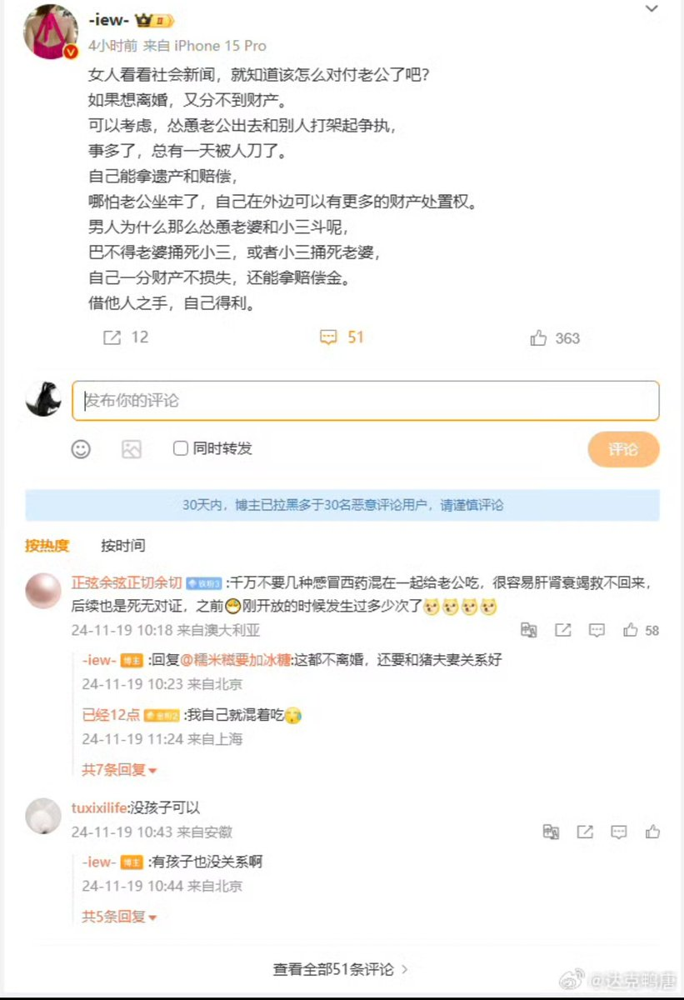
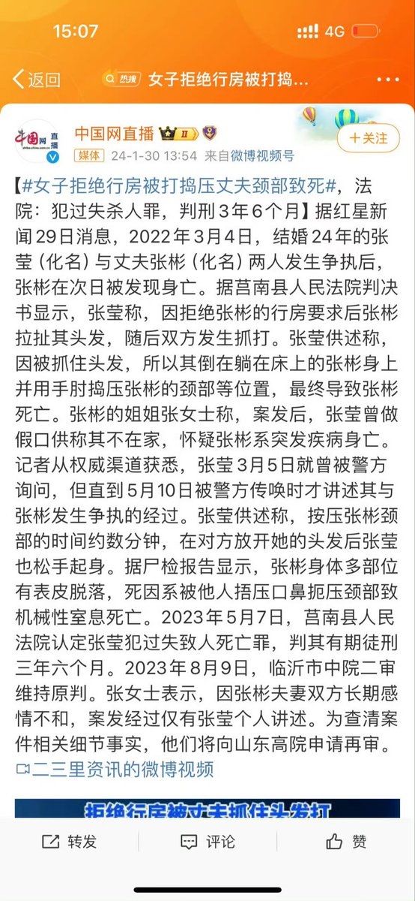

內地不論是否定罪被捕數據不公開我不知道
香港的「包括所有因犯罪而被捕的人士，不論其最終有否被檢控」的數據我倒是能查到（即使是因「正當防衛」脫罪也納入統計）
另外香港有預先醫療指示
說陰謀論前麻煩先動下腦子想想力量差距

香港的「包括所有因犯罪而被捕的人士，不論其最終有否被檢控」的數據我倒是能查到（即使是因「正當防衛」脫罪也納入統計）
另外香港有預先醫療指示
說陰謀論前麻煩先動下腦子想想力量差距



很多“自然死亡”的男人，实际上是被妻子害死的！要么是妻子故意不救，要么是被妻子投毒谋害，又或者是被妻子明目张胆的杀害，然后女人编一个“反抗家暴”或者“拒绝行房”的借口，女人就能被轻拿轻放
男性丧失利用价值，就要被女人抛弃
政府的存在，只是维护这个女本位社会和上层阶级的统治秩序 https://t.co/fPO8NACwdO
男性丧失利用价值，就要被女人抛弃
政府的存在，只是维护这个女本位社会和上层阶级的统治秩序 https://t.co/fPO8NACwdO